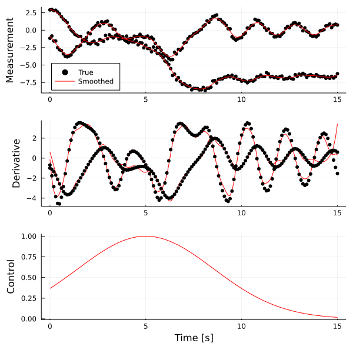

Quickstart
In the following, we will use some of the techniques provided by DataDrivenDiffEq to infer some models.
Linear Systems via Dynamic Mode Decomposition
We will start by estimating the underlying dynamical system of a time discrete process based on some measurements via Dynamic Mode Decomposition. First, we model a simple linear system of the for $u_{i+1} = A u_i$
using DataDrivenDiffEq
using LinearAlgebra
using ModelingToolkit
using OrdinaryDiffEq
A = [0.9 -0.2; 0.0 0.2]
u0 = [10.0; -10.0]
tspan = (0.0, 11.0)
f(u,p,t) = A*u
sys = DiscreteProblem(f, u0, tspan)
sol = solve(sys, FunctionMap())
To estimate the underlying operator in the states $u_1, u_2$, we simply define a discrete DataDrivenProblem using the measurements and time and solve the estimation problem using the DMDSVD algorithm for approximating the operator.
X = Array(sol)
prob = DiscreteDataDrivenProblem(X, t = sol.t)
res = solve(prob, DMDSVD(), digits = 1)
system = result(res)Model ##Koopman#297 with 2 equations
States : x₁ x₂
Parameters : p₁ p₂ p₃
Independent variable: t
Equations
Differential(t)(x₁) = p₁*x₁ + p₂*x₂
Differential(t)(x₂) = p₃*x₂The DataDrivenSolution contains an explicit result which is a Koopman, defining all necessary information, e.g. the associated operator (which corresponds to our abefore defined matrix $A$).
Matrix(system)2×2 Matrix{Float64}:
0.9 -0.2
-1.07938e-17 0.2In general, we can skip the expensive progress of deriving a callable symbolic system and return just the basic definitions using the operator_only keyword.
res = solve(prob, DMDSVD(), digits = 1, operator_only = true)(K = LinearAlgebra.Eigen{Float64, Float64, Matrix{Float64}, Vector{Float64}}([0.1999999999999999, 0.9000000000000006], [0.05494422557947559 -0.9000000000000002; 0.19230478952816454 1.3877787807814457e-17]), C = [1.0 0.0; 0.0 1.0], B = Matrix{Float64}(undef, 0, 0), Q = [658.3410161960379 -135.16260071909275; -25.406503863502085 20.833333333333325], P = [658.3410161960379 -135.16260071909275; -25.406503863502085 20.833333333333325])Where K is the associated operator given as its eigendecomposition, B is a possible mapping of inputs onto the states, C is the linear mapping from the lifted observeables back onto the original states and Q and P are used for updating the operator.
Nonlinear System with Extended Dynamic Mode Decomposition
Similarly, we can use the Extended Dynamic Mode Decomposition via a nonlinear Basis of observeables. Here, we look a rather famous example with a finite dimensional solution.
using DataDrivenDiffEq
using LinearAlgebra
using ModelingToolkit
using OrdinaryDiffEq
using Plots
function slow_manifold(du, u, p, t)
du[1] = p[1] * u[1]
du[2] = p[2] * (u[2] - u[1]^2)
end
u0 = [3.0; -2.0]
tspan = (0.0, 5.0)
p = [-0.8; -0.7]
problem = ODEProblem(slow_manifold, u0, tspan, p)
solution = solve(problem, Tsit5(), saveat = 0.01)
Since we are dealing with an continuous system in time, we define the associated DataDrivenProblem accordingly using the measured states X, their derivates DX and the time t.
X = Array(solution)
t = solution.t
DX = solution(solution.t, Val{1})[:, :]
prob = ContinuousDataDrivenProblem(X, t, DX = DX)DataDrivenProblem{Float64}([3.0 2.976095744391066 … 0.055390426017724356 0.05494907036555832; -2.0 -1.9237690194114834 … 0.1496556838534025 0.1486329834178042], [0.0, 0.01, 0.02, 0.03, 0.04, 0.05, 0.06, 0.07, 0.08, 0.09 … 4.91, 4.92, 4.93, 4.94, 4.95, 4.96, 4.97, 4.98, 4.99, 5.0], [-2.3904255608933944 -2.3904255608933944 … -0.04449006500067019 -0.04413556521660433; 7.623098058851663 7.623098058851663 … -0.10295394011114675 -0.10227004355983167], Matrix{Float64}(undef, 0, 0), Matrix{Float64}(undef, 0, 0), Float64[], false)Additionally, we need to define the Basis for our lifting, before we solve the problem in the lifted space.
@variables u[1:2]
Ψ = Basis([u; u[1]^2], u)
res = solve(prob, Ψ, DMDPINV(), digits = 1)
system = result(res)Explicit Result
Solution with 2 equations and 3 parameters.
Returncode: success
L2 Norm Error: 0.4206111284707489
AICC: 9.544831391300633
Model ##Koopman#1071 with 2 equations
States : u₁ u₂
Parameters : p₁ p₂ p₃
Independent variable: t
Equations
Differential(t)(u₁) = p₁*u₁
Differential(t)(u₂) = p₂*u₂ + p₃*(u₁^2)
[-0.8, -0.7, 0.7]The underlying dynamics have been recovered correctly by the algorithm!
The eigendecomposition of the Koopman operator can be accessed via operator.
operator(system)LinearAlgebra.Eigen{Float64, Float64, Matrix{Float64}, Vector{Float64}}
values:
3-element Vector{Float64}:
-1.6032055695631748
-0.8085558464032564
-0.7096634750155816
vectors:
3×3 Matrix{Float64}:
0.000528926 0.98965 0.0229491
0.61568 -0.137912 0.999634
-0.787996 -0.039652 0.0143123Nonlinear Systems - Sparse Identification of Nonlinear Dynamics
To find the underlying system without any Algortihms related to Koopman operator theory, we can use Sparse Identification of Nonlinear Dynamics - SINDy for short. As the name suggests, it finds the sparsest basis of functions which build the observed trajectory. Again, we will start with a nonlinear system
using DataDrivenDiffEq
using LinearAlgebra
using ModelingToolkit
using OrdinaryDiffEq
using Plots
using Random
Random.seed!(1111) # Due to the noise
# Create a nonlinear pendulum
function pendulum(u, p, t)
x = u[2]
y = -9.81sin(u[1]) - 0.3u[2]^3 -3.0*cos(u[1]) - 10.0*exp(-((t-5.0)/5.0)^2)
return [x;y]
end
u0 = [0.99π; -1.0]
tspan = (0.0, 15.0)
prob = ODEProblem(pendulum, u0, tspan)
sol = solve(prob, Tsit5(), saveat = 0.01)
# Create the data with additional noise
X = sol[:,:] + 0.1 .* randn(size(sol))
DX = similar(sol[:,:])
for (i, xi) in enumerate(eachcol(sol[:,:]))
DX[:,i] = pendulum(xi, [], sol.t[i])
end
ts = sol.tTo estimate the system, we first create a DataDrivenProblem via feeding in the measurement data. Using a Collocation method, it automatically provides the derivative. Control signals can be passed in as a function (u,p,t)->control or an array of measurements.
prob = ContinuousDataDrivenProblem(X, ts, GaussianKernel() ,
U = (u,p,t)->[exp(-((t-5.0)/5.0)^2)], p = ones(2))
Now we infer the system structure. First we define a Basis which collects all possible candidate terms. Since we want to use SINDy, we call solve with an Optimizer, in this case STLSQ which iterates different sparsity thresholds and returns a pareto optimal solution of the underlying sparse_regression!. Note that we include the control signal in the basis as an additional variable c.
@variables u[1:2] c[1:1]
@parameters w[1:2]
h = Num[sin(w[1]*u[1]);cos(w[2]*u[1]); polynomial_basis(u, 5); c]
basis = Basis(h, u, parameters = w, controls = c)
λs = exp10.(-10:0.1:-1)
opt = STLSQ(λs)
res = solve(prob, basis, opt, progress = false, denoise = false, normalize = false, maxiter = 5000)Explicit Result
Solution with 2 equations and 7 parameters.
Returncode: sucess
Sparsity: 5.0
L2 Norm Error: 9.16981610724992
AICC: 1.1925559702692727Where the resulting DataDrivenSolution stores information about the infered model and the parameters:
system = result(res);
params = parameters(res);Model ##Basis#1089 with 2 equations
States : u₁ u₂
Parameters : 7
Independent variable: t
Equations
Differential(t)(u₁) = p₃*u₂
Differential(t)(u₂) = c₁*p₇ + p₄*sin(u₁*w₁) + p₅*cos(u₁*w₂) + p₆*(u₂^3)
[1.0, 1.0, 1.0, -9.75, -3.03, -0.31, -10.01]Since any system obtained via a solve command is a Basis and hence a subtype of an AbstractSystem defined in ModelingToolkit, we can simply simulate the result via:
infered_prob = ODEProblem(system, u0, tspan, parameters(res))
infered_solution = solve(infered_prob, Tsit5(), saveat = ts)As of now, the control input is dropped in the simulation of a system. We are working on this and pull requests are welcome!

As we can see above, the estimated system matches the ground truth reasonably well.
Implicit Nonlinear Dynamics
But what if you want to estimate an implicitly defined system of the form $f(u_t, u, p, t) = 0$? Do not worry, since there exists a solution : Implicit Sparse Identification. It has been originally described in this paper and currently there exist robust algorithms to identify these systems.
We will focus on the Michaelis Menten Kinetics. As before, we will define the DataDrivenProblem and the Basis containing possible candidate functions for our sparse_regression!.
using DataDrivenDiffEq
using LinearAlgebra
using ModelingToolkit
using Plots
using OrdinaryDiffEq
function michaelis_menten(u, p, t)
[0.6 - 1.5u[1]/(0.3+u[1])]
end
u0 = [0.5]
problem_1 = ODEProblem(michaelis_menten, u0, (0.0, 4.0))
solution_1 = solve(problem_1, Tsit5(), saveat = 0.1)
problem_2 = ODEProblem(michaelis_menten, 2*u0, (4.0, 8.0))
solution_2 = solve(problem_2, Tsit5(), saveat = 0.1)
X = [solution_1[:,:] solution_2[:,:]]
ts = [solution_1.t; solution_2.t]
DX = similar(X)
for (i, xi) in enumerate(eachcol(X))
DX[:, i] = michaelis_menten(xi, [], ts[i])
end
prob = ContinuousDataDrivenProblem(X, ts, DX = DX)
@parameters t
D = Differential(t)
@variables u[1:1](t)
h = [monomial_basis(u[1:1], 4)...]
basis = Basis([h; h .* D(u[1])], [u; D(u[1])], iv = t)Model ##Basis#1130 with 10 equations
States : u₁(t) Differential(t)(u₁(t))
Independent variable: t
Equations
φ₁ = 1
φ₂ = u₁(t)
φ₃ = u₁(t)^2
φ₄ = u₁(t)^3
...
φ₁₀ = Differential(t)(u₁(t))*(u₁(t)^4)
Next, we define the ImplicitOptimizer and solve the problem.
opt = ImplicitOptimizer(2e-1)
res = solve(prob, basis, opt, normalize = false, denoise = false, maxiter = 1000);Implicit Result
Solution with 1 equations and 4 parameters.
Returncode: sucess
Sparsity: 4.0
L2 Norm Error: 0.03607682001403754
AICC: 22.077892583231453As we can see, the DataDrivenSolution already has good metrics. Inspection of the underlying system shows that the original equations have been recovered correctly:
println(system)Model ##Basis#1137 with 1 equations
States : u₁(t) Differential(t)(u₁(t))
Parameters : p₁ p₂ p₃ p₄
Independent variable: t
Equations
0 = p₁*u₁(t) + p₂*(u₁(t)^2) + p₃*u₁(t)*Differential(t)(u₁(t)) + p₄*Differential(t)(u₁(t))*(u₁(t)^2)Right now, Implicit results cannot be simulated without further processing in ModelingToolkit